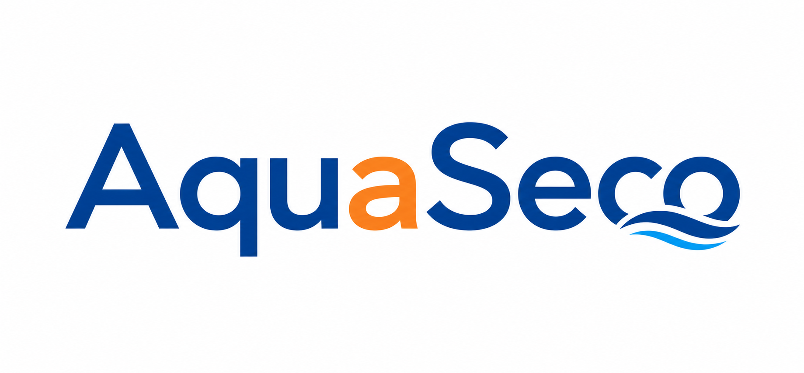
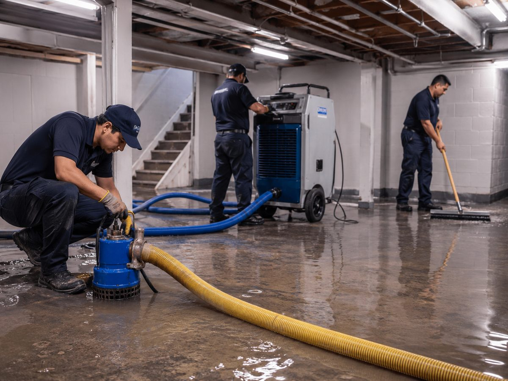
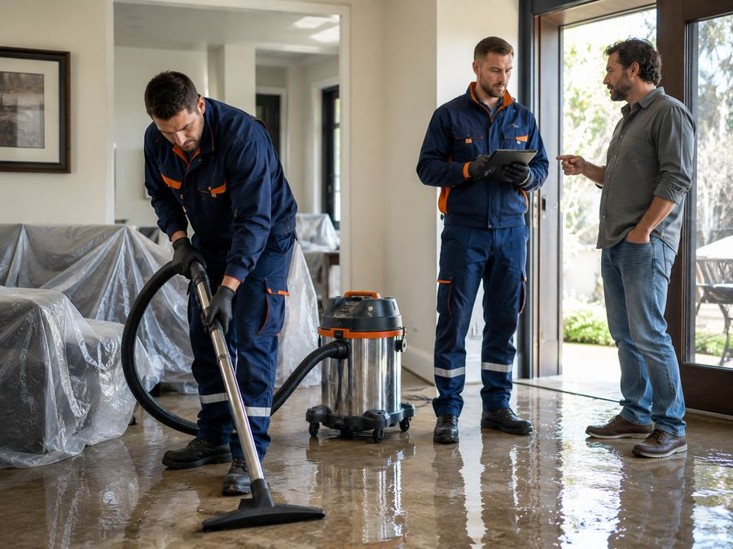
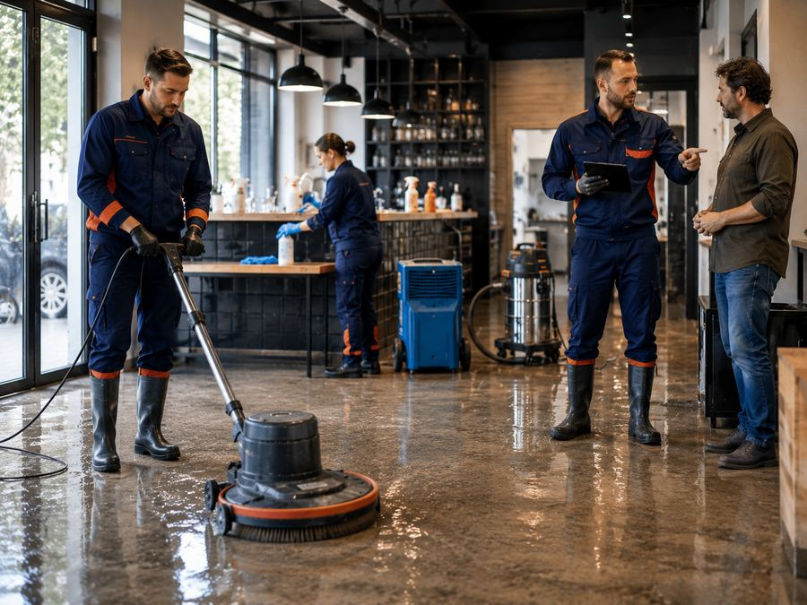
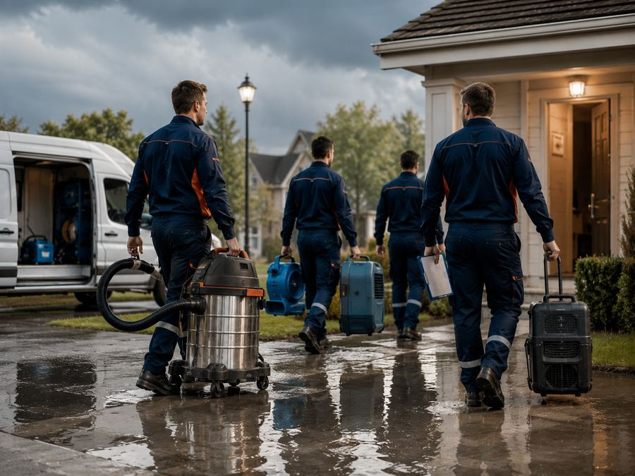

Extracción de agua, secado técnico y desinfección profesional ante inundaciones, filtraciones o roturas de cañerías. Un solo equipo se encarga de todo el proceso, de principio a fin.

Tenemos nuestros equipos de trabajo, disponibles para tus necesidades.
Sabemos que en una inundación cada hora cuenta. Coordinamos la visita lo antes posible para frenar el daño a tiempo.
Extracción, remoción de residuos, limpieza, desinfección, secado técnico y evaluación de daños: todo en un mismo servicio.
Bombas y aspiradoras industriales, deshumidificadores y ventiladores técnicos, pensados para minimizar el daño y acelerar la recuperación.
Un proceso pensado para retirar el agua acumulada y devolverte el espacio en condiciones seguras, lo antes posible.
Con bombas y aspiradoras industriales para vaciar el espacio rápido.
Retiro de materiales contaminantes que quedan tras la inundación.
De pisos, paredes y superficies afectadas.
Prevención de bacterias, hongos y malos olores.
Con deshumidificadores y ventiladores industriales.
Recomendaciones concretas para evitar que el problema se repita.



Cuéntanos qué pasó y coordinamos la visita. Respondemos por WhatsApp.
Escribir por WhatsAppTener un techo, una bomba casera o un desagüe "que nunca falló" no es lo mismo que tener un plan de respuesta real. El agua no avisa, y una filtración o rotura de cañería puede arruinar pisos, paredes y mobiliario en pocas horas.
No se trata de esperar a que pase. Se trata de tener a quién llamar apenas empieza el problema, con equipos profesionales que actúan rápido y resuelven todo el proceso: desde la extracción hasta la desinfección y el secado técnico.
Guarda este contacto ahora. El día que lo necesites, no vas a tener tiempo de buscar.
"Nuestro local comercial quedó inundado y necesitábamos volver a operar lo antes posible. El equipo de AquaSeco respondió de inmediato, trabajó de forma ordenada y profesional, y logramos reabrir mucho antes de lo que imaginábamos. Excelente servicio y muy buena comunicación durante todo el proceso."
Escríbenos ahora y coordinamos la visita de evaluación.